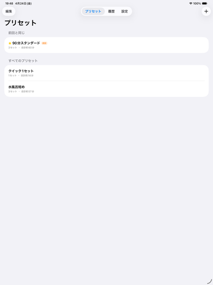
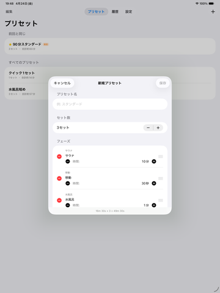
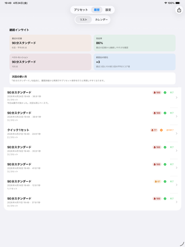

⌚
Apple Watchで完結
フェーズ切り替えは触覚通知。Digital Crown とタップ操作でスキップや一時停止に対応し、サウナ室で iPhone を見る必要を減らします。
Apple Watch Sauna Timer
SaunaFlow は Apple Watch 向けのサウナタイマーです。サウナ・水風呂・休憩を自動で進行し、プリセット管理、ととのいスコア、履歴、メモまで一つにまとめます。
| 対応OS | iOS 17.0 以降 |
|---|---|
| 価格 | 無料（アプリ内課金あり） |
| バージョン | 1.1 |
| サイズ | 約 3 MB |
| カテゴリ | ヘルスケア／フィットネス |
| 対象年齢 | 4+ |
| 対象ユーザー | サウナ愛好家（サ活） |
| データの扱い | 完全オフライン・買い切り |
| 開発者 | freetokyo（YANGLI CHEN） |
| 最終更新 | 2026-06-11 |



「Apple Watchだけでサウナ導線を完結」「ととのいを記録」「追跡なし」という3点は、短文投稿や紹介動画で差別化しやすい特徴です。ページ文言もその軸に合わせています。
Why SaunaFlow
Apple Watch サウナタイマー、水風呂タイマー、休憩タイマー、サウナルーティン管理、履歴、メモ、買い切り、オフライン保存。検索されやすい語と実際の機能を一致させています。
フェーズ切り替えは触覚通知。Digital Crown とタップ操作でスキップや一時停止に対応し、サウナ室で iPhone を見る必要を減らします。
サウナ・水風呂・休憩・移動を自由に組み合わせて、セット数と時間を保存。よく使う流れを再利用できます。
完了率、フェーズバランス、継続時間をもとに 0〜100 点で表示。セッション結果を一目で比較できます。
セッション履歴をあとから見返し、メモで体調や施設の印象を残せます。再現性のあるルーティン作りに向いています。
同じ構成で入りたい日に、前回の流れを素早く再開できます。日常ユース向けの導線です。
プリセット、履歴、メモはデバイス内に保存。外部サーバー送信や第三者広告 SDK を前提としない設計です。
How It Works
体験の流れが明確なことは、LPの離脱率低減にもASO文言の整合にも効きます。
各フェーズの時間とセット数を設定して保存。Apple Watch で使う前提のサウナルーティンを整えます。
プリセットを選ぶと、サウナ・水風呂・休憩が順に進行。通知に従って動くだけで流れを維持できます。
終了後にスコアを確認し、メモを残して次回に活かせます。ルーティンの改善点も見つけやすくなります。
Use Cases
誇張せず、実際の利用文脈で説明すると、公開後の紹介文・短尺動画・検索スニペットと整合しやすくなります。
施設ごとの時間配分をプリセット化して、迷わず開始できます。
Apple Watch 主体の操作設計なので、サウナ室での確認回数を減らせます。
スコアとメモを残すことで、満足度の高い流れを振り返りやすくなります。
プレミアムは買い切り型で、継続課金を前提にしていません。
Pricing
ASOでは「無料開始」と「サブスクなし」は反応差が出やすい訴求点です。ここでも明確に示しています。
Free
無料
基本機能を試したい人向け。
Premium
買い切り
サブスクリプションではありません。
Apple Watch Sauna Timer
SaunaFlow is an Apple Watch sauna timer for sauna, cold plunge, and rest. Build presets on iPhone, run sessions on Watch, review Totonoi Score, history, and notes after each session.
The clearest share hooks are: Apple Watch-first sauna timing, session logging, and privacy-first offline storage. The page copy now keeps those claims consistent across landing and support content.
Why SaunaFlow
The messaging now aligns product discovery keywords with features that actually exist in the app: presets, Totonoi Score, history, notes, offline storage, and one-time premium.
Run sessions on your wrist with haptic phase alerts. Skip or pause with the Digital Crown or screen tap.
Create reusable flows with sauna, cold plunge, rest, and move phases. Set duration and number of sets on iPhone.
See a 0-100 score based on completion, phase balance, and total session duration.
Review sessions later and add notes to remember what worked best at each facility or routine.
Resume your familiar routine quickly without rebuilding the same setup each time.
Your presets, history, and notes stay on-device. No external analytics SDKs or ad SDKs are described on this site.
How It Works
Clear onboarding copy improves both conversion and search snippet relevance.
Pick the phase order, duration, and number of sets for your preferred sauna routine.
Follow haptic cues as SaunaFlow moves through sauna, cold plunge, and rest.
Check Totonoi Score and save notes so your best sessions are easier to repeat.
Use Cases
The copy avoids unsupported claims and stays close to what the app demonstrably offers.
Save your preferred sequence once and use it again.
Apple Watch-driven control reduces the need to check your iPhone mid-session.
Use score and notes together to compare routines over time.
Premium is positioned as a one-time purchase instead of a recurring plan.
Pricing
The page now states the monetization model clearly for both ASO clarity and landing page conversion.
Free
Free
Good for trying the core experience.
Premium
One-time purchase
Not a subscription.
Apple Watch Sauna Timer
SaunaFlow ist ein Sauna-Timer für die Apple Watch. Steuere Sauna, Kaltbad und Ruhephase am Handgelenk, speichere Routinen als Presets und prüfe danach Verlauf, Notizen und Totonoi-Score.
Die Kernbotschaften sind jetzt konsistent: Apple Watch-first, Routinen speichern, Datenschutz durch Offline-Speicherung.
Warum SaunaFlow
Die Seite nennt nur Funktionen, die sich direkt mit dem Produktversprechen verbinden lassen: Presets, Totonoi-Score, Verlauf, Notizen, Offline-Speicherung und Einmalkauf.
Haptische Hinweise bei jedem Phasenwechsel. Überspringen oder pausieren per Digital Crown oder Touch.
Sauna, Kaltbad, Ruhe und Bewegung als wiederverwendbare Abläufe speichern.
Ein Score von 0 bis 100 auf Basis von Abschlussrate, Balance und Dauer.
Einheiten später prüfen und Erfahrungen direkt dokumentieren.
Bekannte Routinen schnell wiederverwenden.
Presets, Verlauf und Notizen bleiben lokal auf dem Gerät.
Ablauf
Klare Produktführung hilft sowohl bei Conversion als auch bei Such-Snippets.
Phasen, Dauer und Anzahl der Sets definieren und speichern.
SaunaFlow führt per Haptik durch Sauna, Kaltbad und Ruhephase.
Ergebnisse vergleichen und Notizen für spätere Einheiten speichern.
Einsatzfälle
Die Aussagen bleiben bewusst sachlich und nah an den vorhandenen Funktionen.
Einmal speichern, danach schnell erneut starten.
Die Watch bleibt der zentrale Bedienpunkt während der Einheit.
Score und Notizen machen Unterschiede zwischen Routinen sichtbar.
Premium wird als Einmalkauf kommuniziert.
Preise
Das Preismodell ist für Suchmaschinen, Nutzer und App Store-Besucher jetzt eindeutig beschrieben.
Kostenlos
Gratis
Für den Einstieg in die Kernfunktionen.
Premium
Einmalkauf
Kein Abonnement.